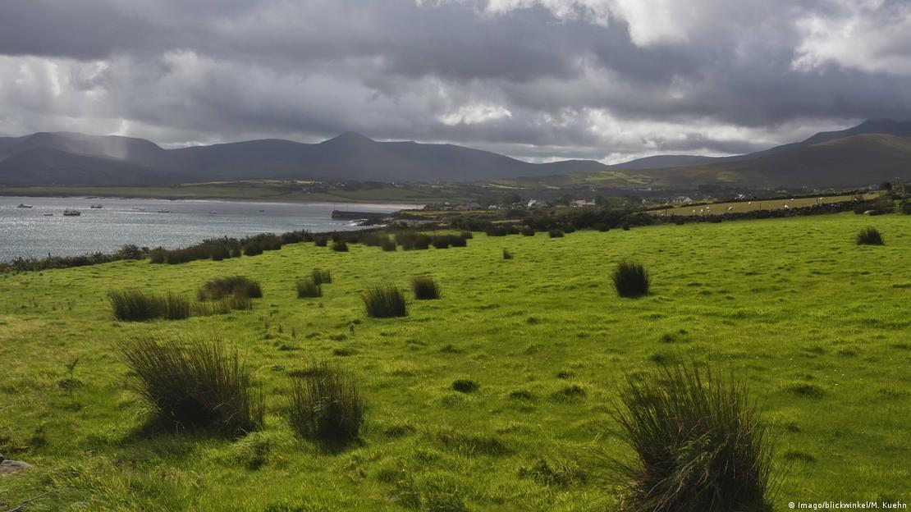

Irlanda fue una vez una tierra de bosques. La isla, con una superficie de 84.421 kilómetros cuadrados, llegó a estar cubierta por un 80 por ciento de bosque. Hoy en día, con tan sólo un 11 por ciento, tiene una de las tasas más bajas de Europa.
La historia de la destrucción de los bosques de Irlanda no es bonita. Ningún otro país en Europa ha experimentado tal destrucción de su bosque nativo. A principios del siglo XX, el área forestal de la isla se había reducido a menos de un uno por ciento de su masa terrestre total.
Si bien un clima cambiante desempeñó un papel importante en la destrucción de los bosques irlandeses, lamentablemente fue la actividad humana la que causó la mayor parte de los daños a lo largo de los siglos. La desaparición de los bosques de Irlanda, al igual que el gaélico (la lengua nativa del país que ahora habla con fluidez una pequeña minoría), son una parte casi perdida de la identidad cultural y física de Irlanda.
Durante el siglo XX, el gobierno irlandés comenzó a comprender la magnitud de lo que se había perdido e inició un proceso de reforestación a gran escala, estableciendo bosques, en su mayoría de coníferas tolerantes a la exposición, en tierras montañosas.
Durante mi niñez, a principios de los años noventa, en la región septentrional del Ulster irlandés, apenas se notaba nada de la reforestación en las cercanías porque vivíamos lejos de las montañas, en un paisaje dominado por pequeñas granjas.
Recuerdo cómo, de niño, deseaba que hubiera un gran bosque detrás de nuestra casa, porque en muchos de los libros que leíamos mi hermana y yo, las verdaderas aventuras no comenzaban hasta que los niños se alejaban de la supervisión de los adultos y se adentraban en los profundos y oscuros bosques que había más allá.
El bosque más cercano a nosotros era un lugar llamado Killykeen Forest Park, un agradable bosque recreativo a pocos kilómetros de distancia. Ir allí siempre era emocionante. Con cinco o seis años, no podía expresarlo con palabras, pero mirando hacia atrás recuerdo ser consciente de que el bosque ofrecía una libertad muy especial.
A medida que me hacía mayor, algo comenzó a cambiar en el paisaje que nos rodeaba: empezaron a aparecer pequeños bosques. En muchos de los campos que nos rodeaban, se crearon bosques en tierras antes desoladas y poco fértiles.
En la década de 1990, el gobierno irlandés y la UE concedieron ayudas a los agricultores para animarles a cultivar árboles en sus propias tierras. Hoy en día, casi la mitad de toda la silvicultura irlandesa está en manos privadas. Esto ha ayudado a que haya un aumento en el porcentaje de tierra irlandesa cubierta por bosques. Actualmente, el gobierno irlandés tiene como objetivo que el 18 por ciento de la tierra del país sea área forestal para el año 2046.
Aquellos que piensan que un bosque es algo grande, no deben equivocarse. Los bosques que crecieron a nuestro alrededor eran arboledas muy pequeñas, a menudo sólo unos pocos acres de tierra, pero tuvieron una gran impacto en mi juventud.

Una de las localizaciones de nuestro viaje por Irlanda que más ganas tenía de desvirtualizar era la del famoso bosque de Juego de Tronos de Irlanda del Norte cuya aparición en la serie lo hizo saltar a la fama atrayendo a fotógrafos, curiosos y fans de la serie de todo el mundo que en poco tiempo han ido llenando la red de imágenes espectaculares del conocido como The Dark Hedges. Un bosque de hayas plantado por una ricachona familia del siglo XVIII, entre cuyas ramas se dice que en la noche se pasea Lady Gray, –una supuesta sirvienta de estos ricachones que falleció en extrañas circustancias–… y sin duda uno de los lugares más increíbles que he tenido la suerte de fotografiar.
Como casi todas las mañanas, el día amaneció gris, frio y húmedo en nuestra preciosa casita del sur de Dublín. Los grajos iban en metro. ¡Menuda rasca!
ra nuestro tercer día en Irlanda y tras varios días descubriendo Dublín y el Oeste del país, hoy la idea era subir hacia el norte, en coche de alquiler, para salir de Irlanda y recorrer la mayoría de lugares imprescindibles que visitar en Irlanda del Norte, para entre otros, poner cara al bosque de Juego de Tronos al que llegaríamos en mitad de una manta de agua que no nos dejó bajarnos del coche.
No siempre se tiene la suerte de llegar a un lugar y verlo tal y como te imaginabas… y en este caso, el bosque irlandés de Juego de Tronos, puedo confirmar que es un sitio más para la lista de “lugares expectativa Vs realidad” como ya ocurre con sitios como Santorini, las Piramides de Keops o la Fontana Di Trevi, que todos imaginamos de un modo idílico pero cuya realidad son esos lugares con 3 millones de turistas vestidos con la luz apagada haciendo selfies de manera compulsiva. Un horror.